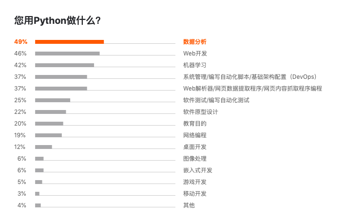
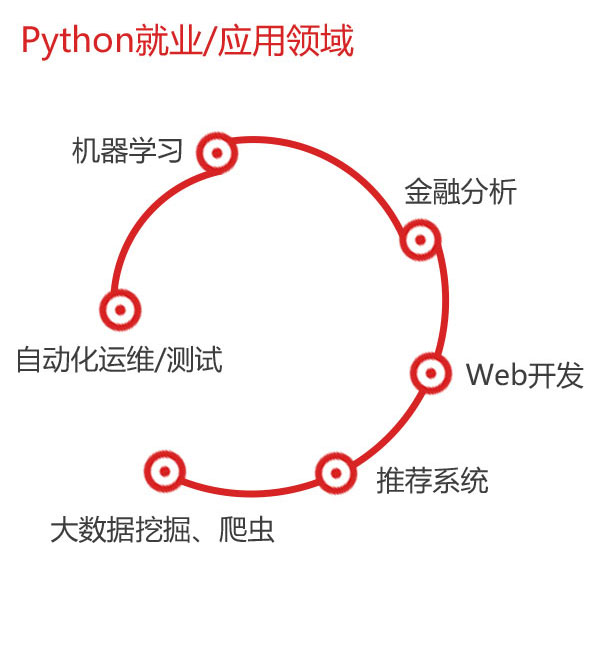
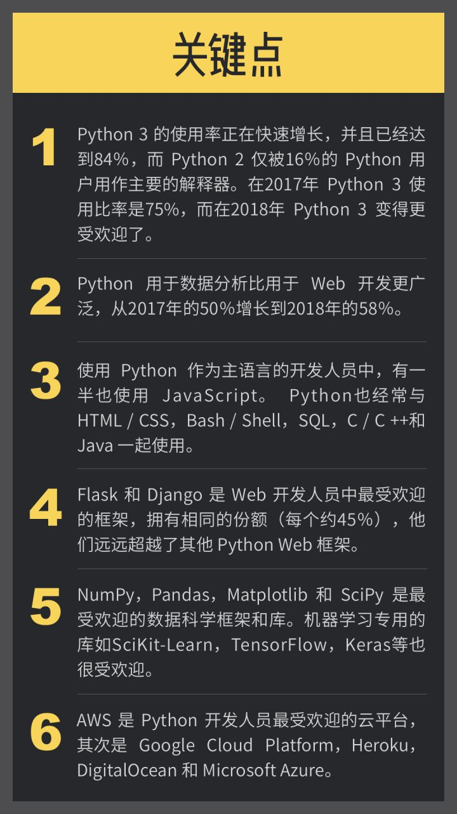
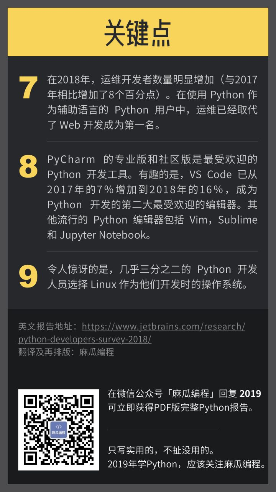

Python典型用途
Python语言可以有很多用途。
此处贴出一些统计数据，供了解大概情况：
- 
Python相关工作、职业、公司
- 在用Python的企业
- Python就业=应用领域
- 
- 典型Python职位 = 工作方向
- Python 全栈工程师
- Python Web开发工程师
- Python 爬虫工程师
- Python 数据分析师
- Python 数据挖掘师
- Python 机器学习工程师
- Python 数据处理工程师
- Python 推荐系统工程师
- Python 推荐系统架构师
- 计算机领域=业界 的一些Python应用
- 电信基础设施 (Twilio)
- 支付系统 (PayPal, Balanced Payments)
- 神经科学和心理学 (许多, 许多, 例子)
- 数值分析和工程 (numpy, numba, 以及 更多其它)
- 动画(LucasArts, Disney, Dreamworks)
- 游戏后台 (Eve Online, Second Life, Battlefield, 以及 其它很多)
- Email基础设施 (Mailman, Mailgun)
- 媒体存储和处理 (YouTube, Instagram, Dropbox)
- 操作和系统管理 (Rackspace, OpenStack)
- 自然语言处理(NLTK)
- 机器学习和计算机版本 (scikit-learn, Orange, SimpleCV)
- 安全性和渗透性测试 (很多很多 以及 eBay/PayPal )
- 大数据 (Disco, Hadoop support)
- 如理 (Calendar Server, 它 驱动了 Apple iCal)
- 搜索系统 (ITA, Ultraseek, 还有 Google)
- Internet 基础设施 (DNS) (BIND 10)
更多Python的应用，可参考官网的列表：Python Success Stories | Python.org
Python的使用
参考一些报告，有些结论供参考：
- Jetbrains的2018年的Python报告
- 用Python语言的人
- 84%是用作主要语言的
- 除了Python，还用
JavaScript，HTML/CSS，Bash/Shell，SQL等
- 60%用作工作（和个人）方面
- 用来做什么
数据分析Web开发运维/系统管理/自动脚本机器学习网页解析和爬虫软件测试/自动化测试教学目的软件原型
- Python版本：
- 84%都用
Python3了Web开发，数据分析，运维中用Python3最多
- 16%还用Python2
- 84%都用
- 关键点
- 
- 
- 用Python语言的人